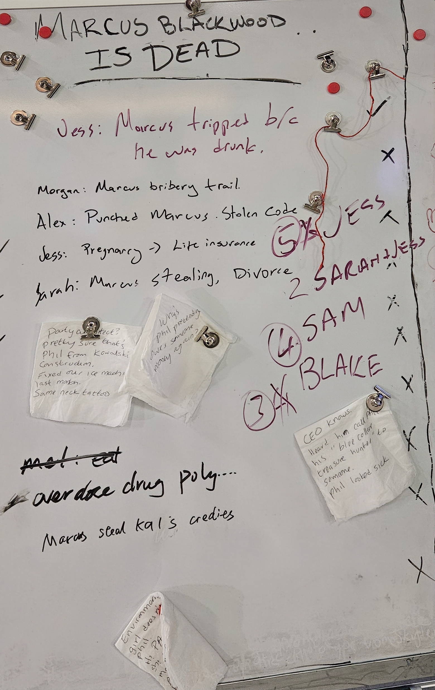

They Named Jess Kane a Killer. The Money That Could Prove It Was Built to Disappear.
Nine people reconstructed the night Marcus Blackwood died and voted to accuse Jess Kane, the girlfriend carrying his child. The evidence they made public told a more complicated story, and while they argued motive, millions in memories vanished into accounts no one can name and NeurAI moved to hand his chair to his widow.
.jpg)
Marcus Blackwood is dead. The nine people who gathered in a Fremont warehouse the morning after to piece together how he died reached a verdict before the police arrived. They named Jess Kane, the woman carrying his child.
I was not in that room. What follows is built from the public record those nine people created, from my own reporting, and from a leak about who will run his company now, one that reached me as I wrote. The room wrote Jess a motive: pregnancy, then life insurance. Then it accused her of conspiring with the wife she was supposedly wronging. But the evidence those same nine people put on the record tells a more complicated story, and it leaves one question their verdict never touched.
If Marcus Blackwood was killed for his money, the money is the one thing in this case no one can follow. It vanished that morning into accounts with no real names attached, and the biggest of them could belong to anyone who walked through that warehouse. I cannot even rule out the woman they convicted.
The Story
Before anyone in that warehouse said the word murder, the record made one thing plain about the man at the center of it. Marcus Blackwood spent his last night running an experiment on his own guests. He fed them an untested drug, extracted their memories while they were under, and then, by his own account, watched the people he had drugged fail to follow the simplest instructions.
That is the man. He moved cash in envelopes, dismissed the artists he hired as vendors who should remember their place, and swallowed extracts a stranger in a lab coat had just warned him were dangerous. Half the people who knew him had a reason to want him gone. Hold onto that, because the room I am about to describe went looking for a single motive in the one person who had the least power in the building.
.jpg)
Jess Kane was not hiding. Around 9:52 that morning she openly pushed a wave of evidence onto the room's shared screen, by her own admission, including a memory most people would have paid to keep buried. In it, Marcus recruits her for what he calls an acting gig, talks her into taking the drug, and runs his extraction on her. She was one of his test subjects. The woman the room would convict had put the most damning story about Marcus, and her own violation, on the public record herself.
Midway through the morning, the operator who ran the evidence market gathered everyone for a check-in, and a memory surfaced that stopped the room cold: Jess was pregnant, the child was Marcus's, and Sarah Blackwood already knew. The strongest theory anyone offered at that point was the gentlest one. Jess herself put it forward. Marcus was drunk, he tripped, he died. It was the kind of explanation that asks nothing of anybody. Others floated a darker version of the same accident: that the experimental drug he had been feeding himself for months had finally caught up with him.
The deliberation did not stay gentle. Vic Kingsley opened it by accusing Jess and Sarah of conspiring to get rid of Marcus together. The pregnancy became a motive, the motive became a number, and the number got written on the board as life insurance. A preliminary count split the room four ways for Jess, four for Sam Thorne, three for the operator who ran the market. In the final seconds before the police reached the door, the room chose Jess. Five votes.
The room had its name. And it is not hard to see how it got there. The pregnancy had landed like a bomb, and a pregnant mistress reads as a motive. Sam Thorne, the other obvious suspect, was unreadable: not one of her memories had reached the screen, nothing to accuse her with and nothing to clear her by. The money that might have pointed elsewhere was anonymous. The people with real power were dangerous to name and impossible to pin. Jess was the one suspect who was both legible and powerless, and the room took the path of least resistance. The record it left behind would take longer to read.

Follow the Money
While the room debated whether a pregnant woman would kill for an inheritance, roughly $5.4 million was paid out that morning to whoever was willing to feed memories into the dark. Who walked away with it is the question the market was built to bury. The biggest winner was not a person. It was a cipher. An account called KakiHBD took in $3.98 million, about 73 cents of every dollar paid out, in a window of twenty-six minutes. There is no name attached to it, and there never will be.
.jpg)
Then there is Vic Kingsley. An account in her own name quietly took in $600,000, and she made no secret of it. She told the operator who ran the market she had nothing to hide. I will take her at her word. It is a strange pairing in the record, though: a woman reading the open screen in plain sight while an account carrying her name grew in the dark beside it.
.jpg)
And then there is the account that bears Alex Reeves's name. $330,000, every dollar of it logged in a single minute. Here is what is observable, and only what is observable: Alex's own grievances against Marcus sit right there in the open record, and she was never seen at the market table. So I am left with a question I think I am entitled to ask. Who takes a payout for burying secrets while leaving her own grievances out in the open for anyone to read? I cannot tell you who ran that account. I can only tell you it does not fit the woman whose name is on it.
And then there is the name the room actually chose. Jess Kane earned nothing under her own name that morning; the only handle that carried it was an exposure channel that paid out zero. But exposure went onto the public screen. The burial market was Blake's table, where memories were sold for money and locked away, and by accounts from the room, Jess kept going back to it. She was no stranger to the man who turned memories into cash. I cannot tell you what she carried to him, or whether any of these nameless accounts answered to her, including the cipher that swallowed $3.98 million and most of the night's money. I can tell you that the woman the room convicted on a motive of money was a regular at the one place that morning where money was actually being made. The market that hid everyone else's hands hid hers too. And when it was over, Jess did not stay to argue the verdict. She is in the Cayman Islands now, where people go to be near money they would rather no one counted. It proves nothing. It is also the one move in this whole story that makes the room's money motive look less like a guess.
The Players
Vic opened the vote by saying Jess and Sarah conspired. Here is what the two of them actually did, in front of a room that voted against it anyway. In a bathroom, late that last night, the wife learned the mistress was carrying her husband's child. She expected to find an enemy. She did not.
.jpg)
Two memories describe that bathroom, one from each woman, and they agree. This was the conspiracy the room voted to punish: two of Marcus's victims, recognizing each other.
Everyone else in that room had a reason to want Marcus gone, and most of them had more power than the woman the room chose. Ashe Motoko was the journalist Marcus's circle had destroyed: Taylor Chase tipped Marcus off, got Ashe's exposé buried, and took an exclusive as the reward. By morning Ashe was quietly putting the truth back together, piece by piece. Taylor had no shortage of enemies in that warehouse either; Vic Kingsley, hunting for them early in the morning, called them simply "my enemy."
Alex Reeves had spent five years watching Marcus profit off the company he took from her, and she had come ready to fight for it: a cease-and-desist letter, filed through Patchwork Law, with a deadline a week away. Hers is the same name that hangs over a $330,000 account she was never seen near. Remi Whitman had watched Vic pour twenty million dollars into Marcus while freezing out her own profitable company, a snub she put in writing to Marcus himself, and by morning she had turned proof of his code theft into an alliance with that same investor. Riley Torres, Sarah's best friend and an environmental lawyer, traced Marcus's shell companies to their source and left Sarah a voicemail, the money is yours, then told the market operator she did not need any of it herself.
And Mel Nilsson carried the quietest conflict of all. An email from his own firm shows he had taken Sarah on as a divorce client, noting he had known both Blackwoods for over a decade and had met Marcus first. What that email leaves out, his old texts with Sam supply: he and Marcus had once been involved. "Wouldn't make that mistake twice," he wrote. The kind of thing a lawyer is supposed to disclose, and the kind of thing a room hunting one motive never hears. Grudges, leverage, lawyers, a buried past. The room had its pick of motive, and it chose the person who had only a pregnancy.
What's Missing
Sam Thorne came within one vote of being the answer. Four in the preliminary round, tied with Jess. And yet not one of Sam's memories ever reached the public screen. The room nearly convicted a blank space. Sam's own diary says who she was to Marcus. She made his drugs, "the shit I'm making for him," she wrote, reproducing a formula he paid her to perfect. She found the paternity test herself, sealed in an envelope someone had slipped under the warehouse door. And she had known him since college, long before the machine. But on the morning's record, where it would have counted, there was only silence.
.jpg)
The $3.98 million from the last section is its own kind of silence. I can see what those memories fetched. I cannot see what they said. The largest financial actor of the morning is a pseudonym, and the contents of everything it buried are gone. The market was built so that no one would ever have to answer for what they carried out of it. Whether the biggest winner was the woman the room sent away, or the people now circling Marcus's empty chair, the record was designed never to say.
Closing
The room named Jess Kane, and the name now carries legal weight. Fremont police have issued a warrant. Jess did not respond to my requests for comment. She was already gone. Whatever the record says, that verdict has force.
But the chair was already being traded before Marcus was cold. Vic's own recovered memory lays out the plan in her words: install Alex, push Marcus out, kill the lawsuit and the criminal exposure before either could land. A VC was overheard outside, minutes after Marcus took a punch to the face, saying he's out, you're in, it's done. Sarah's name was in that conversation. Alex's cease and desist demanded Marcus's removal and a neutral interim CEO in his place.
The schemers aimed at Alex. The leak that reached me names none of them. NeurAI intends to approach Sarah Blackwood, the widow Marcus had quietly stripped of the joint accounts before he died, the woman Vic accused of conspiring with his mistress, and offer her the company. The coup missed. The chair defaulted to the person who was supposed to be the victim.
What this room did, on the morning of February 22 in a Fremont warehouse, was turn everyone who knew Marcus into a record, part of it public, most of it sold off and buried, and then reach a verdict that ended the inquiry before anyone had to say who profited from his death. The verdict was about Jess. The consequence is about Sarah. A market that let memory be sold and selectively silenced made both of those things possible at once.
The record this room made is the only one we have. It shows what the room chose to see, and in the silences it paid for, what it chose not to.